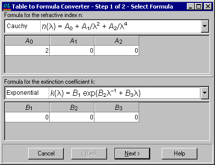
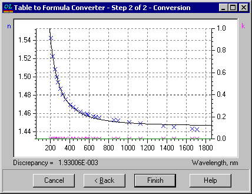

Formula from Table
Formula from Table
Navigation: OptiLayer Menu Commands > Data Menu > Substrate and Layer Material >
Formula from Table
` <table_from_rt.html>`__ ` <idh_edit_layer_material.html>`__ ` <compositionfromtable.html>`__

In the first step of this dialog, you should select the formulas for the refractive index and extinction coefficient to be utilized in the conversion. This conversion process involves a fitting procedure that aims to find the best formula approximation of the tabular data. The coefficients of the formula displayed in the dialog window serve as the initial values for this fitting procedure.

In the second step of the conversion dialogue, the optimal approximation of the tabular data is presented. If the conversion result appears satisfactory, click the “Finish” button to transfer the achieved formula approximation to the Materials/Substrate editor.
If the quality of the obtained approximation does not meet your expectations, you can click the “Back” button. This allows you to either select a different formula or adjust the initial parameters of the chosen formula to improve the approximation quality.